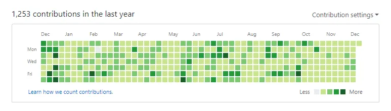

🌟 BeautifyGH Toolkit Documentation
A comprehensive, battle-tested guide to elevating your GitHub presence with adaptive Dark/Light components, high-signal project showcases, and zero-bug GitHub Actions automations.
🚀 Quick Start (60 Seconds Setup)
- Create a new public repository on GitHub with the exact same name as your GitHub username (e.g.
https://github.com/username/username). - Check the option Add a README file.
- Use our interactive Web Profile Generator or copy code snippets below.
- Add automated workflows to
.github/workflows/to enable nightly snake animations.
1. 🐍 Snake Contribution Grid Animation
An interactive animated snake eating through your GitHub contribution squares. Automatically switches between Dark and Light SVG outputs based on the visitor's system theme.
<div align="center">
<picture>
<source media="(prefers-color-scheme: dark)" srcset="https://raw.githubusercontent.com/YOUR_USERNAME/YOUR_USERNAME/output/github-snake-dark.svg" />
<source media="(prefers-color-scheme: light)" srcset="https://raw.githubusercontent.com/YOUR_USERNAME/YOUR_USERNAME/output/github-snake.svg" />
<img alt="GitHub Contribution Snake" src="https://raw.githubusercontent.com/YOUR_USERNAME/YOUR_USERNAME/output/github-snake.svg" width="100%" />
</picture>
</div>2. 📊 Adaptive GitHub Stats & Top Languages
Real-time analytics cards powered by high-availability mirrors that automatically adapt to TokyoNight (Dark) or Default (Light) themes.
<div align="center">
<picture>
<source media="(prefers-color-scheme: dark)" srcset="https://streak-stats.demolab.com/?user=YOUR_USERNAME&theme=tokyonight&hide_border=true" />
<source media="(prefers-color-scheme: light)" srcset="https://streak-stats.demolab.com/?user=YOUR_USERNAME&theme=default&hide_border=true" />
<img src="https://streak-stats.demolab.com/?user=YOUR_USERNAME&hide_border=true" alt="Streak Stats" />
</picture>
<br/><br/>
<picture>
<source media="(prefers-color-scheme: dark)" srcset="https://github-readme-stats-eight-theta.vercel.app/api?username=YOUR_USERNAME&show_icons=true&theme=tokyonight&hide_border=true&count_private=true" />
<source media="(prefers-color-scheme: light)" srcset="https://github-readme-stats-eight-theta.vercel.app/api?username=YOUR_USERNAME&show_icons=true&theme=default&hide_border=true&count_private=true" />
<img src="https://github-readme-stats-eight-theta.vercel.app/api?username=YOUR_USERNAME&show_icons=true&hide_border=true" alt="GitHub Stats" />
</picture>
</div>3. 🛠️ Curated Tech Stack Badges
Professionally grouped per architectural layer (Frontend, Backend, Databases, Cloud & DevOps) to eliminate badge clutter.
<table>
<tr>
<td align="center" width="140"><b>Frontend</b></td>
<td><img src="https://skillicons.dev/icons?i=typescript,javascript,react,nextjs,vue,tailwind,html,css" alt="Frontend" /></td>
</tr>
<tr>
<td align="center" width="140"><b>Backend</b></td>
<td><img src="https://skillicons.dev/icons?i=rust,go,nodejs,python,fastapi" alt="Backend" /></td>
</tr>
<tr>
<td align="center" width="140"><b>Databases</b></td>
<td><img src="https://skillicons.dev/icons?i=postgres,mongodb,redis,sqlite" alt="Databases" /></td>
</tr>
</table>💡 The Philosophy: 30 Minutes Every Day for Your Craft
"We are what we repeatedly do. Excellence, then, is not an act, but a habit." — Will Durant
Dedicating at least 30 minutes every day to sharpen your engineering skills outside daily work forms the foundation of true software craftsmanship. A beautiful GitHub profile celebrates this consistency and dedication.
